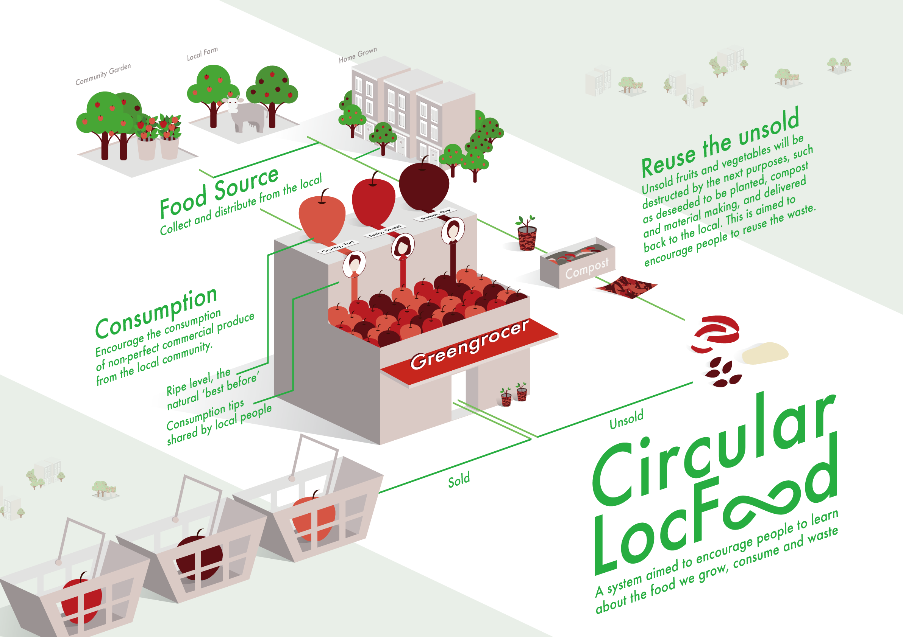

Circular LocFood System
- Design Research
- Social Design
- Graphic Design
- Website Design
The project is aimed to reframe the urban food consumption.
The system is from the experiment the alternative journey of an apple sold in grocery shops. When an apple is bought and eaten, the rest of the apple which could be seeds, peels or other parts normally is thrown away. However, those parts can be made into plates, containers and so on, which could be a future material.

Overall, there are four categories in the system: grocery, source, waste, materials.
To optimise the sustainability of grocery shopping, the system is aimed to create a place where encourages people to learn about the food and buy with new criteria that is the natural 'best before' and grown by the local. Each fruit or vegetable is beyond itself, which is about nutrition, texture, season, land, climate etc. By seeing, touching and eating the food grown locally, it helps people to learn the place food are grown and they are living in. The relationship between food and people can be closer if we see the process and the way people deal with the food or the perspective of the place we live in could be reframed.
In London, there are more and more community gardens and city farms in this area, as well as many people growing edible plants in their house or yards. Under the over-consumption and disposal city culture, single-use is a normality, which causes the future unsustainable. Thus, it is important to intervent or change the journey that one object is got and disposed or wasted.